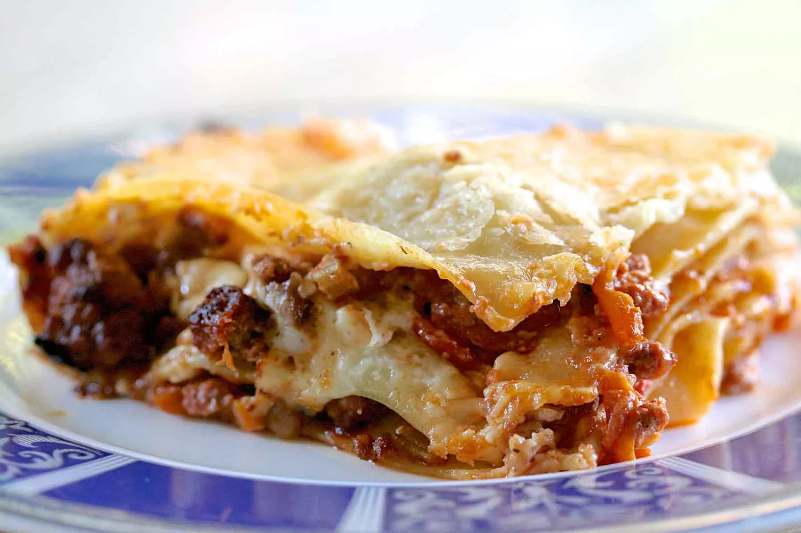

Odin Recipe

Description
The BEST Lasagna Bolognese! Layers of flat lasagna noodles baked with alternating layers of slow-cooked Bolognese sauce, bechamel, and Parmesan cheese.
Classic Lasagna Bolognese
Ingredients (Lasagna + Bolognese & Béchamel Sauce)
- 2 ounces diced pancetta
- 1 medium Spanish or yellow onion
- 1 rib celery
- 1 carrot
- 4 tablespoons unsalted butter
- 11 ounces ground beef
- 4 ounces ground pork
- 4 ounces ground Italian sausage
- 1 freshly grounded clove
- Dash freshly ground cinnamon
- 1 teaspoon freshly ground black pepper
- 2 pounds peeled and chopped tomatoes or 1 can whole peeled tomatoes
- 1 cup whole milk
- 1/2 teaspoon sea salt
- 2 cups whole milk
- 1/4 cup unsalted butter
- 1/4 cup all-purpose flour
- About 16 sheets lasagna noodles
- 1 cup freshly grated Parmesan cheese
Preparing Bolognese Sauce
Make Soffritto
- Combine pancetta, onion, celery, and carrot in sauté pan with butter and cook over medium heat until onion turns pale gold.
- Add the beef, pork, and sausage to the soffritto and increase the heat to high. Cook until browned. Sprinkle with the ground clove, cinnamon, and pepper.
- Stir in the tomatoes and bring to a simmer. Reduce the heat to medium. Cook over medium heat for 15 minutes. If you are using whole canned tomatoes, break them up as you add them to the sauce.
- Add the milk, season with sea salt, then turn down the heat and let simmer for 2 and 1/2 hours. Stir at least every 20 minutes. Whenever the sauce simmers down to the point that it is sticking to the bottom of the pan, just add 1/4 cup of water and scrape up the browned bits from the bottom and continue to cook.